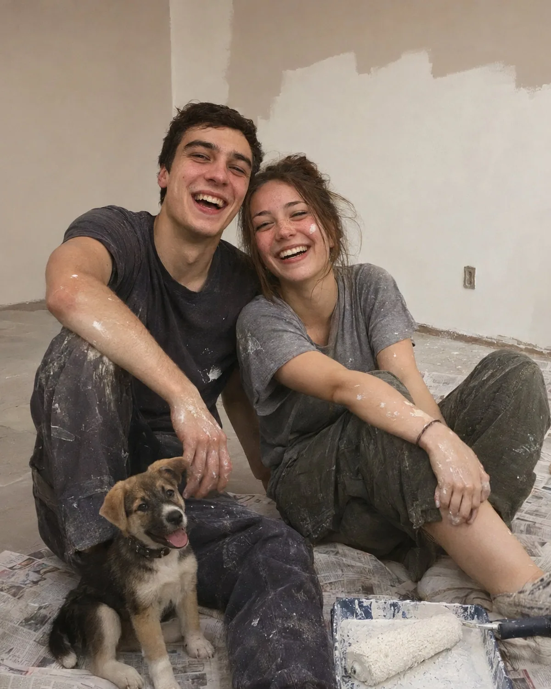
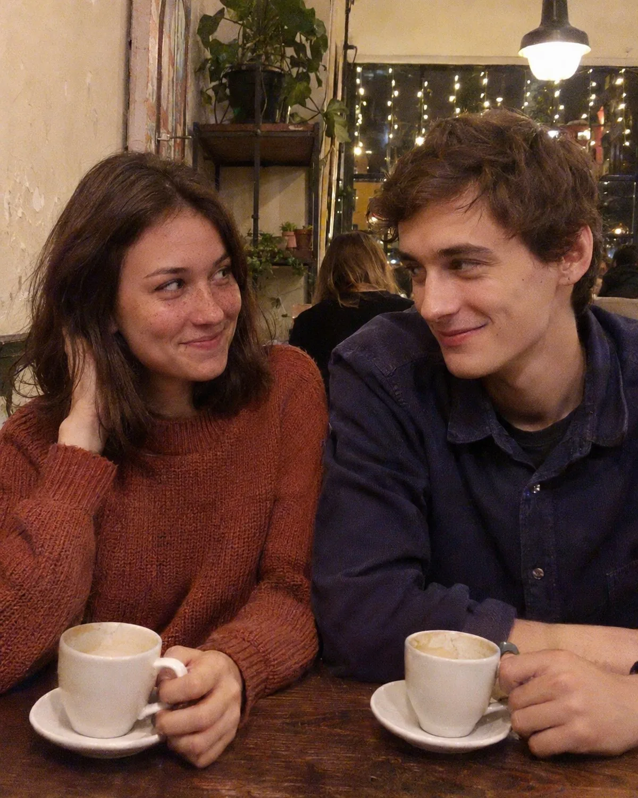

Ваши общие моменты
Мы собираем ваши фотографии, письмо и голос в личный сайт, который вы подарите близкому человеку по одной ссылке

Спасибо за нашу историю
За поддержку, заботу
И за то, что ты рядом
В демо нет аудиозаписи. Здесь будет голос вашего близкого
